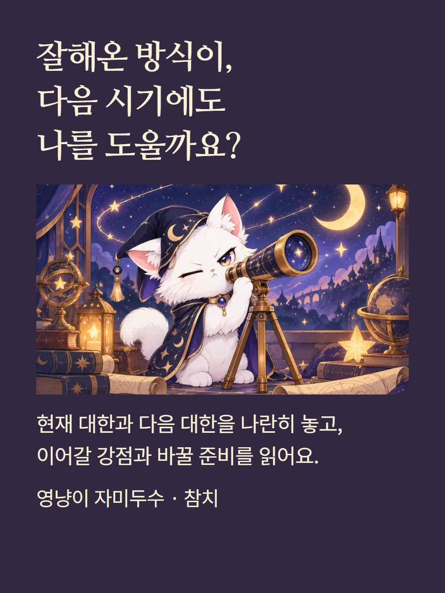
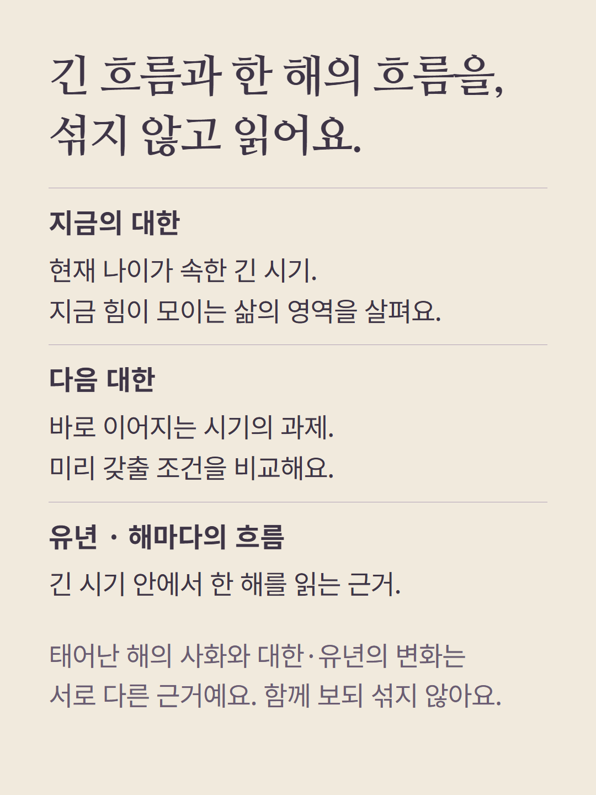
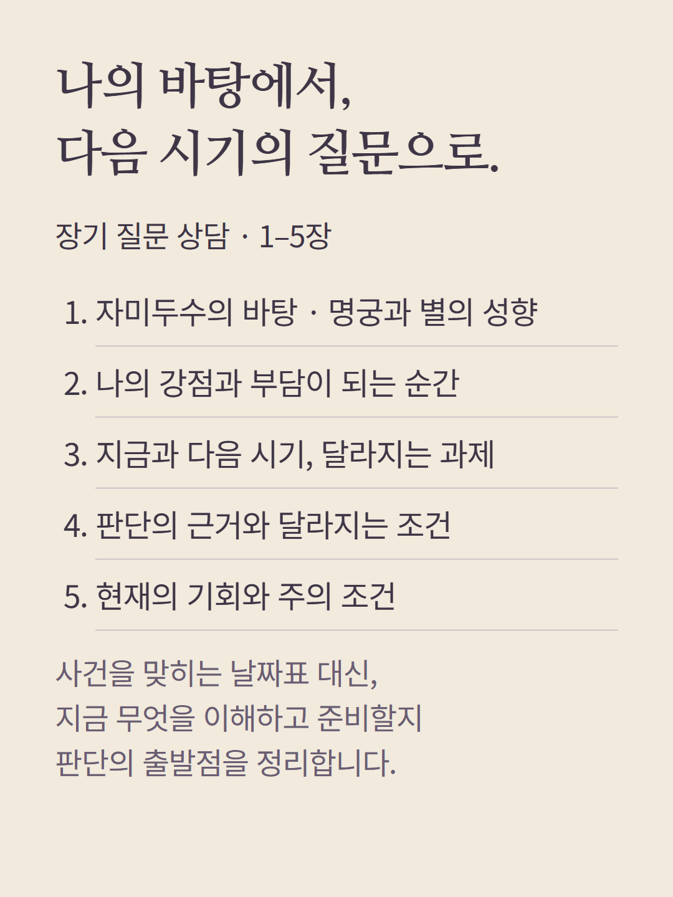
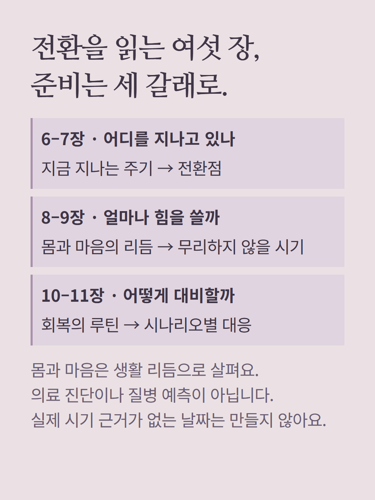
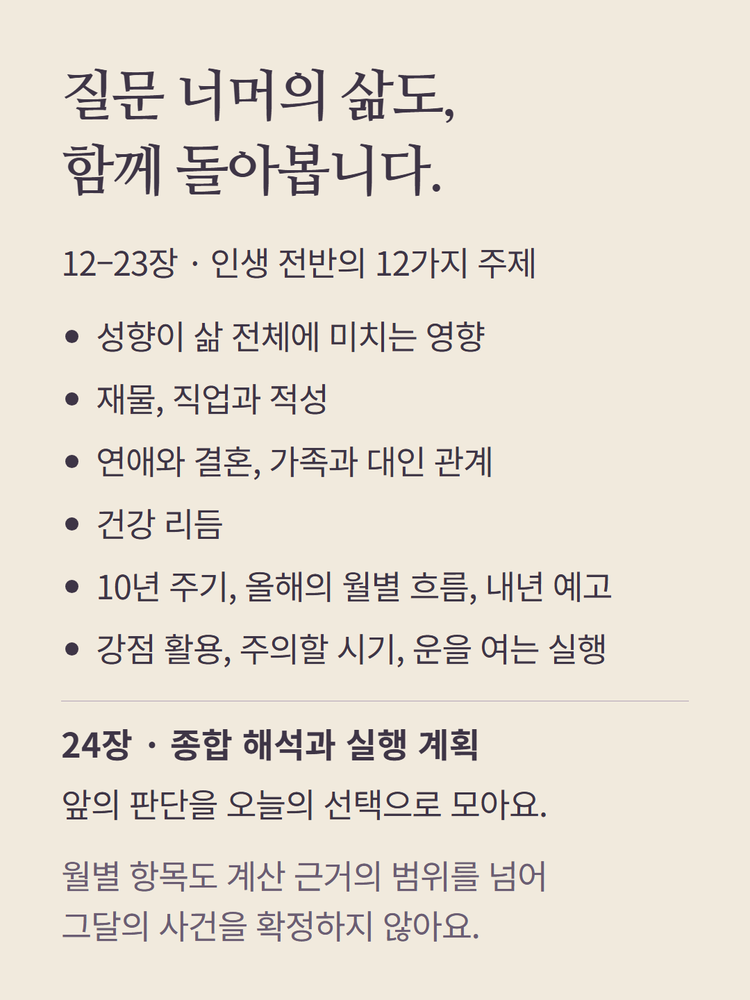
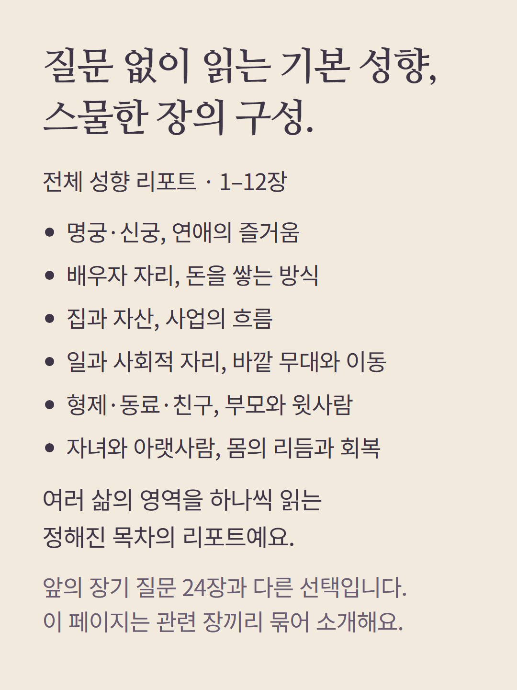
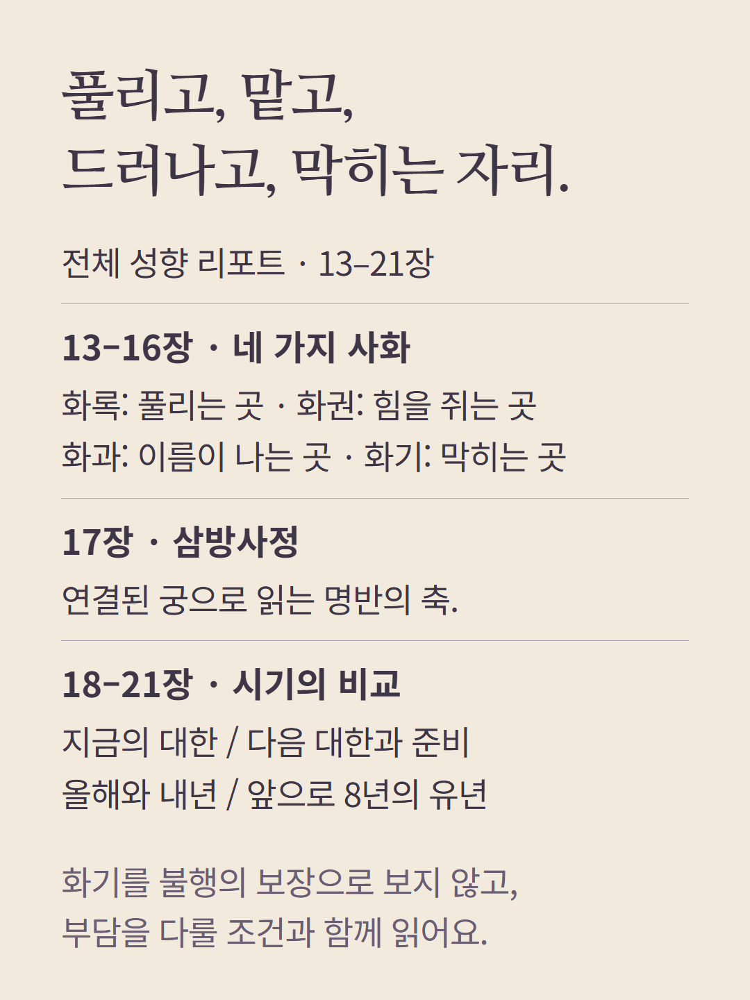
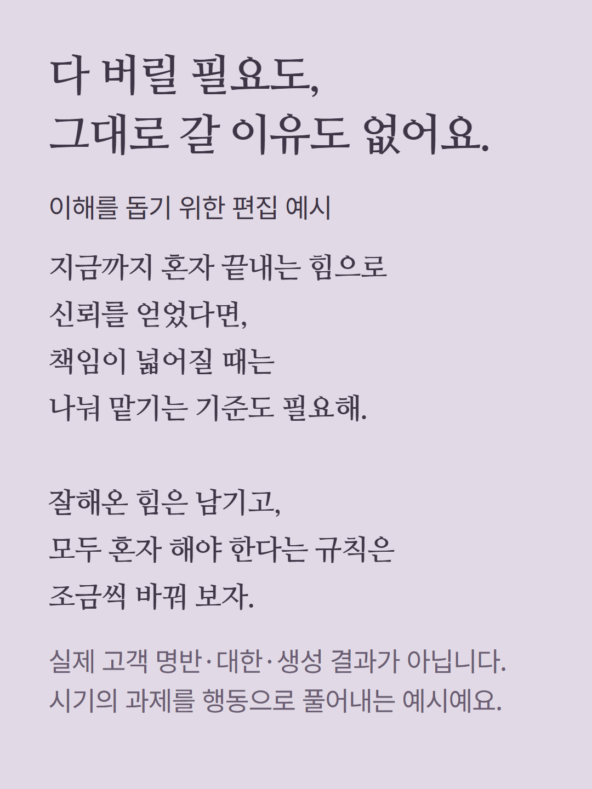
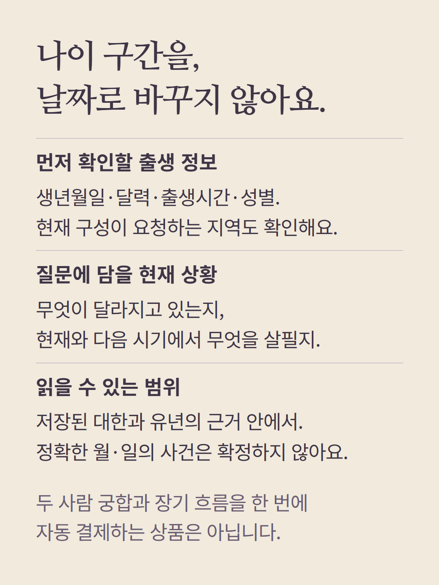
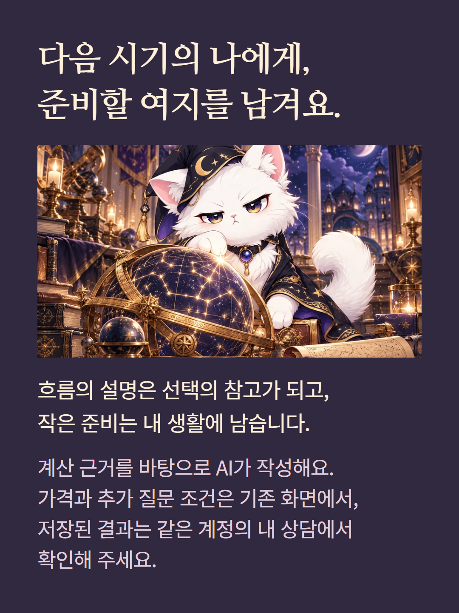

자미두수 참치 장기 질문 상담은 실제 저장된 현재 대한과 다음 대한을 비교합니다. 질문 상담 24장과 질문 없이 고르는 기본 성향 리포트 21장은 다른 구성입니다. 안내 목차는 관련 장을 묶어 읽기 쉽게 편집했습니다. 시기 제목이 있어도 실제 근거가 나이·연 단위이면 특정 월·일의 사건으로 확장하지 않습니다. 두 사람 궁합과 장기 흐름은 자동으로 묶이지 않습니다. 사례는 실제 고객 결과가 아닌 편집 예시입니다. 계산 근거를 바탕으로 AI가 작성하며 가격·추가 질문 조건은 기존 상담 준비 화면에서 확인합니다.